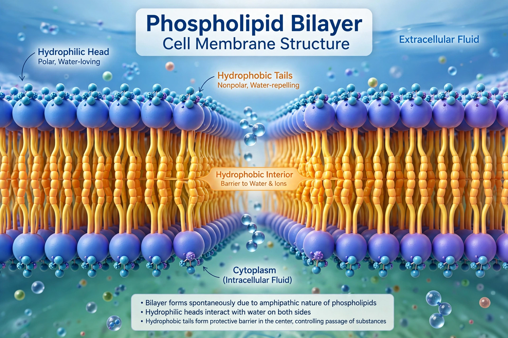

Phospholipids are a class of lipids whose molecule has a hydrophilic "head" containing a phosphate group and two hydrophobic "tails" derived from fatty acids, joined by an alcohol residue (often glycerol). They are the principal structural component of all cell membranes, where they arrange themselves into a lipid bilayer.

| Main classes | Glycerophospholipids; sphingomyelins |
|---|---|
| Common types | Phosphatidylcholine, phosphatidylethanolamine, phosphatidylserine, phosphatidylinositol |
| Role | Cell membrane structure; signaling |
Most phospholipids are glycerophospholipids: a glycerol backbone carries two fatty-acid chains and a phosphate group modified by an alcohol such as choline, ethanolamine, serine, or inositol, which determines the lipid's name and properties. Sphingomyelins instead use a sphingosine backbone. Because the head is water-attracting and the tails water-repelling, phospholipids spontaneously form bilayers, micelles, and liposomes in aqueous environments — the physical basis of the cell membrane.
Beyond forming membranes, phospholipids participate in cell signaling: hydrolysis by phospholipases releases second messengers such as inositol trisphosphate, diacylglycerol, and arachidonic acid. Phosphatidylserine normally faces the cytoplasmic leaflet; its appearance on the outer leaflet signals apoptosis ("eat-me" signal) and triggers blood clotting on platelet surfaces. Phospholipids also emulsify fats in bile and form the bulk of pulmonary surfactant.
Cells build phospholipids in the endoplasmic reticulum via the Kennedy pathway and related routes. Commercially, phospholipid mixtures extracted from soybean or egg — sold as lecithin — are widely used as emulsifiers in foods, cosmetics, and pharmaceuticals, and as dietary supplements.
See also: Phosphatidylcholine · Lipid bilayer · Cell membrane · Lecithin